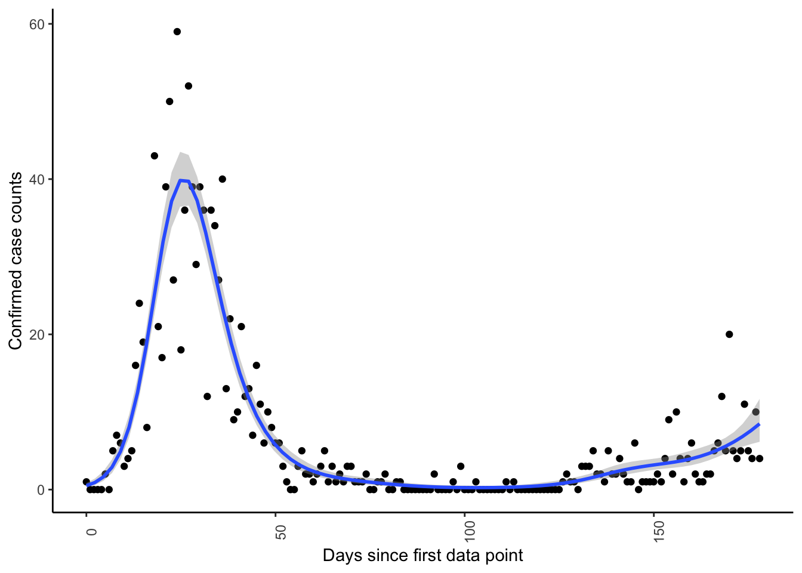

2 Trying some ODE solvers in R
## Using checkpoint directory /Users/dlekshmi/.checkpoint/2020-07-17/lib/x86_64-apple-darwin15.6.0/3.6.0The last time I had exclusively programmed in R, it was 2014. At that point, I decided to make a shift from R to MATLAB partly because it was the tool that was used in our lab for solving ODEs and numerical analysis and secondly, R had options I was not very interested to use. Now that I have all this new found time after my pandemic defense, what better way to re-educate, and recalibrate myself and check in at what the R world is upto.
So promptly I visited the CRAN website and picked out the ones I found interesting to try out. Also see the nice blog comparing different solvers across different languages. As I usually work with ODEs, I checked out a standard non-linear ODE function that I wanted to integrate i.e. the Lokta-Volterra system. I also decided to not use the odeSolve package as I found the others more appealing in terms of model definition and what they interface with.
2.1 diffeqr package
What appealed to me is that this package interfaces with the DifferentialEquations.jl in Julia which includes solvers for DDE, ODEs, SDEs, PDEs and many more. Moreover, in comparison to other tools, the julia package has appealing features, of which I would like to highlight event-handling, good efficiency and symbolic calculation of jacobians and autodifferentiation. Also note, that this gives us access to all the solvers in Julia Therefore, an R package that interfaces to the julia package intrgigued me.
We begin by setting up the julia interface to R by calling julia_setup function in JuliaCall package. Note that this takes some (considerable) time to run when doing it the first time.
# The set up takes time, (a LOT of time when doing the first stime.)
julia_setup(JULIA_HOME="/Applications/Julia-1.2.app/Contents/Resources/julia/bin")Then, we setup the diffeqr package:
We begin by defining our ODE system to be evaluated with Julia as ‘f’ and define the initial conditionas and the time span we will integrate the system over.
f <- JuliaCall::julia_eval("
function f(du,u,p,t)
du[1] = 10.0*(u[2]-u[1])
du[2] = u[1]*(28.0-u[3]) - u[2]
du[3] = u[1]*u[2] - (8/3)*u[3]
end")
u0 = c(1.0,0.0,0.0)
tspan <- list(0.0,100.0)We then solve the ODE. Note that the first time we called the model it also compiles, therefore I store only the second time taken in the second time we solve it.
2.2 odeintr package
The odeintr package uses the integration engine from Boost and therefore compiles the model in C++. We specify the model in C, compile and integrate it. The nice part it this package allows you to use all the steppers in Boost. I liked the intuitive/ clean way of defining the models and running it.
f_c <- '
dxdt[0] = 10.0*(x[1]-x[0]);
dxdt[1] = x[0]*(28.0-x[2]) - x[1];
dxdt[2] = x[0]*x[1] - (8/3)*x[2];
'
# compile model, and pass integration options
compile_sys("lorenz", f_c,atol = 1e-04, rtol = 1e-04)
# Run model
t_odeintr=system.time({sol_odeintr = lorenz(u0, 100, 0.001)})
# Results
colnames(sol_odeintr)<-c('time','u1','u2','u3')
sol_odeintr_melted<-sol_odeintr%>%
as_tibble()%>%
gather(key=u,value='value',-time)%>%
mutate(Method='odeintr')2.3 sundialr package
Finally, the subdialr package that interfaces with CVODE/CVODES (something I am more familiar with). I define a model in R and run it:
f_sundials<- function(t,u,p){
du <- vector(mode = "numeric", length = length(u))
du[1] = 10.0*(u[2]-u[1])
du[2] = u[1]*(28.0-u[3]) - u[2]
du[3] = u[1]*u[2] - (8/3)*u[3]
du
}
# run
t_cvode=system.time({
sol_cvode<- cvode(seq(0,100,0.01), u0+1e-10, f_sundials,0,reltolerance = 1e-4,abstolerance = 1e-4)
})
#
colnames(sol_cvode)<-c('time','u1','u2','u3')
sol_cvode_melted<-sol_cvode%>%
as_tibble()%>%
gather(key=u,value='value',-time)%>%
mutate(Method='sundialr')and also define one with RCpp:
# With RCpp
Rcpp::sourceCpp(code = '
#include <Rcpp.h>
using namespace Rcpp;
// [[Rcpp::export]]
NumericVector f_sundials_Rcpp (double t, NumericVector y, NumericVector p){
// Initialize ydot filled with zeros
NumericVector dydt(y.length());
//
dydt[0] = 10.0*(y[1]-y[0]);
dydt[1] = y[0]*(28.0-y[2]) - y[1];
dydt[2] = y[0]*y[1] - (8/3)*y[2];
return dydt;
}')
# run
t_cvode_cpp=system.time({
sol_cvode_cpp<- cvode(seq(0,100,0.01), u0+1e-10, f_sundials_Rcpp, NaN,reltolerance = 1e-4,abstolerance = 1e-4)
})
#
colnames(sol_cvode_cpp)<-c('time','u1','u2','u3')
sol_cvode_cpp_melted<-sol_cvode_cpp%>%
as_tibble()%>%
gather(key=u,value='value',-time)%>%
mutate(Method='sundialr_Rcpp')2.4 Some remarks
Taking a quick look at the CPU times shows that the diffeqr and odeintr package are faster than the sundialr one.
all_sols=bind_rows(sol_cvode_melted,sol_cvode_cpp_melted,
sol_odeintr_melted,sol_diffeqr_melted)
ggplot(all_sols,aes(x=time,y=value))+
geom_line(aes(col=u))+
scale_color_brewer(palette='Set1')+
theme_minimal()+
facet_wrap(~Method)
# Time
time_df=bind_rows(t_cvode_cpp,t_cvode,t_diffeqr,t_odeintr);
time_df<-time_df%>%mutate(package=c('sundialr_Cpp',
'sundialr',
'diffeqr',
'odeintr'))
kable(time_df)| user.self | sys.self | elapsed | user.child | sys.child | package |
|---|---|---|---|---|---|
| 0.160 | 0.005 | 0.166 | 0.000 | 0.000 | sundialr_Cpp |
| 0.149 | 0.007 | 0.161 | 0.000 | 0.000 | sundialr |
| 0.008 | 0.012 | 0.152 | 0.011 | 0.076 | diffeqr |
| 0.017 | 0.001 | 0.018 | 0.000 | 0.000 | odeintr |
Finally, ‘deSolve’ also allows us to interface with FORTRAN and C. Since its uses LSODA for solving ODEs. However, I decided against trying this, given the superiority of the methods available in DifferentialEquations.jl. Since a lot of packages are based on ‘deSolve’ I think it deserves a separate and a more serious comparison with the other packages in terms of efficiency, choice of methods available and usability.